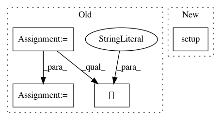

ee5e88bc0446986f6bc74080835e0566856d0e79,setup.py,,,#,9
Before Change
version = "0.2.0"
// Adapted from https://github.com/pytorch/pytorch
cwd = os.path.dirname(os.path.abspath(__file__))
if os.getenv("WAVENET_VOCODER_BUILD_VERSION"):
version = os.getenv("WAVENET_VOCODER_BUILD_VERSION")
else:
try:
sha = subprocess.check_output(
["git", "rev-parse", "HEAD"], cwd=cwd).decode("ascii").strip()
version += "+" + sha[:7]
except subprocess.CalledProcessError:
pass
except IOError: // FileNotFoundError for python 3
pass
After Change
"wavenet_vocoder/version.py").load_module().version
setup(name="wavenet_vocoder",
version=version,
description="PyTorch implementation of WaveNet vocoder",
packages=find_packages(),
install_requires=[
"numpy",
"scipy",
"torch >= 0.4.1",
"docopt",
"joblib",
"tqdm",
"tensorboardX",
"nnmnkwii >= 0.0.11",
"scikit-learn",
"librosa",
],
extras_require={
"test": [
"nose",
"pysptk >= 0.1.9",
"matplotlib",
],
})
In pattern: SUPERPATTERN
Frequency: 3
Non-data size: 4
Instances
Project Name: r9y9/wavenet_vocoder
Commit Name: ee5e88bc0446986f6bc74080835e0566856d0e79
Time: 2019-09-07
Author: zryuichi@gmail.com
File Name: setup.py
Class Name:
Method Name:
Project Name: chartbeat-labs/textacy
Commit Name: 03e098c84a14309b87528ef21ccb5e4f834de5f5
Time: 2020-03-01
Author: burtdewilde@gmail.com
File Name: setup.py
Class Name:
Method Name:
Project Name: pantsbuild/pants
Commit Name: e28fe8614a849d0de90af5b6844cf47614a2bb27
Time: 2016-03-07
Author: kwilson@twopensource.com
File Name: src/python/pants/engine/exp/legacy/commands.py
Class Name:
Method Name: dependencies